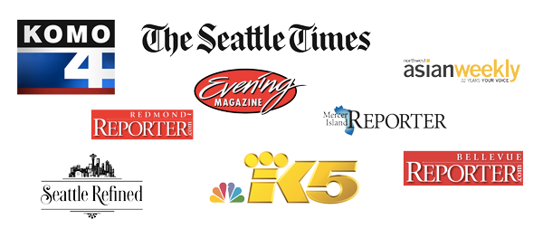
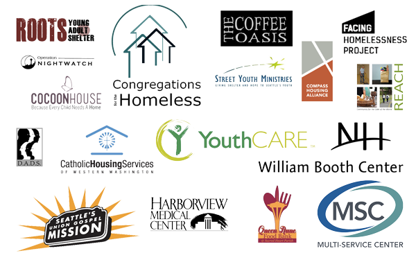

Together, we have raised over $76,000 towards 3,500 sleeping bags to put an end to sleepless nights in Seattle & King County this winter. Thank you for your support!
We still need your help! Interested in meeting people in need and distributing sleeping bags at our Big Give on Saturday 12/13 from 3pm-9:30pm? Sign up below. We will be meeting at 1808 18th Ave, Seattle, WA 98122 to receive training before being sent out in teams of four all across the county.
Big Give Volunteer Signup Form
Big Give Volunteer Leaders Signup Form
The leader signup is for those with experience working with or serving the homeless who would be comfortable leading a team of four.
Looking for other ways to give back? Take a look at our list of volunteer opportunities from non-profits around the community
In the Press
Sponsorships

Non-Profit Partnerships
Sleepless in Seattle is proud to partner with a host of non-profits, companies, and civic groups in our area. Partners will receive sleeping bags to be distributed through their facilities.